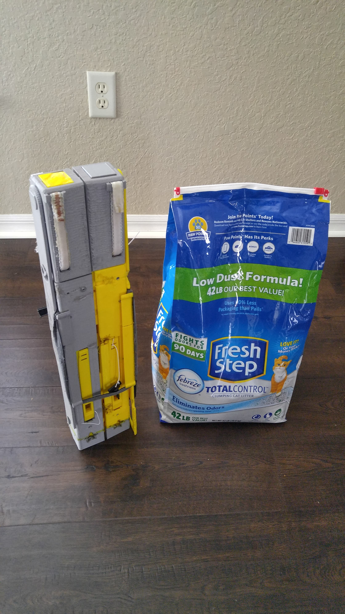
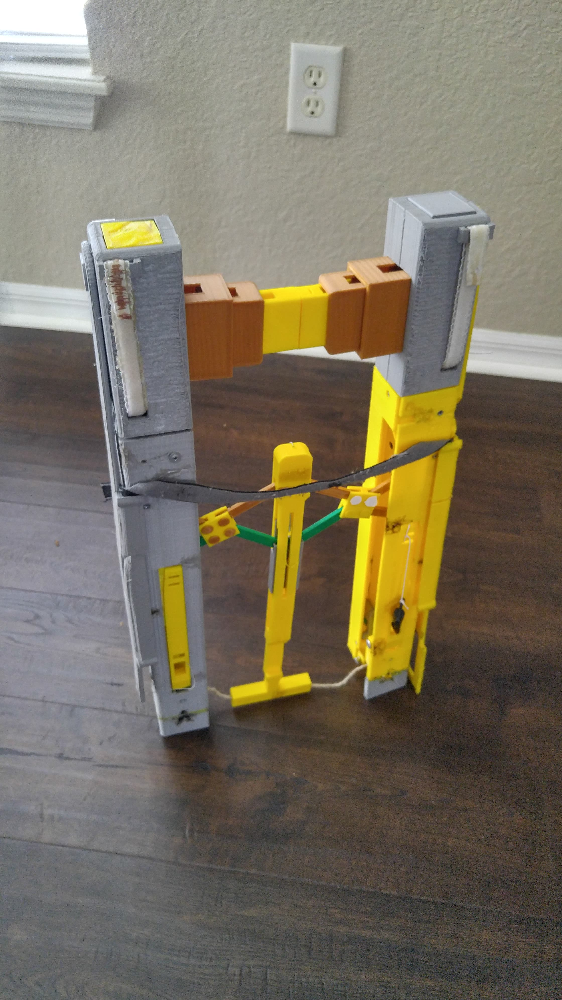

GOMI Project

The GOMI Project
It’s a typical day in the sunshine state. Trying to leave for work with just enough time to beat traffic, but determined to take the trash you should’ve taken out last night. As you’re pulling the drawstring to the point that the bag itself starts stretching itself, you’re debating on whether to double bag it. You take the risk and rush out the door. As you start trotting downstairs from your apartment, the bag feels lighter. You look in horror struck as food remnants, soiled diapers, and other unmentionables are strewn all over the stairwell and underneath onto the downstairs neighbor’s front porch. Then it starts to rain. After damage control and cleaning yourself up to avoid smelling like an entire dirty litter, consider yourself late for work.
This is where the idea for GOMI originated. It serves as a multi-functional tool designed to alleviate tension and lighten the load for certain aspects of everyday life. Small enough to conveniently store when not in use, but durable enough to get the job done.
